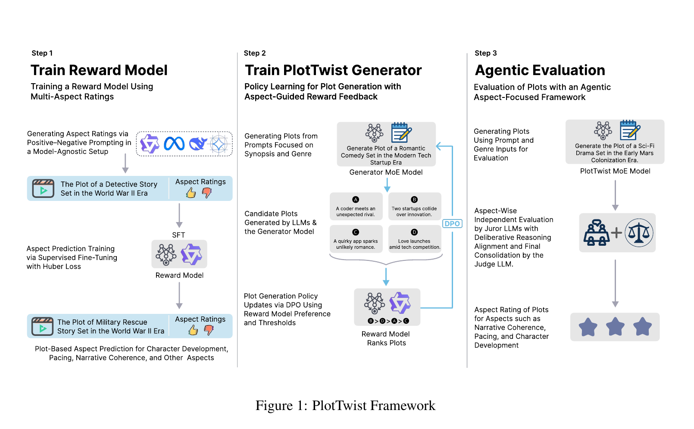
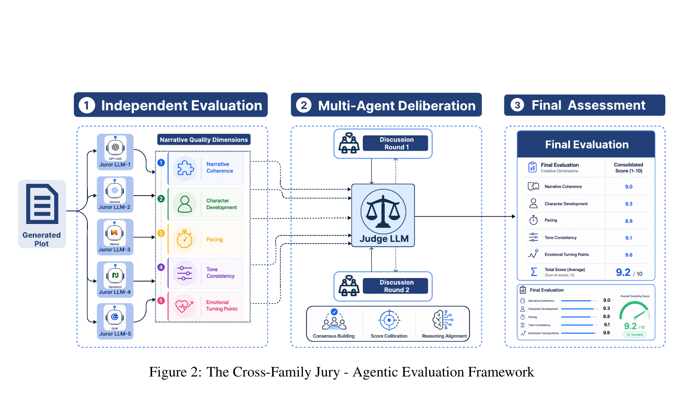

PlotTwist: A Creative Plot Generation Framework with Small Language Models
A structured framework that lets a 3B active-parameter model turn a one-line premise into a plot that holds its own against frontier systems many times its size.
Abstract
Structure instead of scale
Creative plot generation asks a language model to turn a concise premise into a coherent narrative while satisfying several constraints at once: global coherence, character development, pacing, tone consistency, and emotional progression.
Recent large language models are fluent on general-purpose tasks, but they need preference alignment to do well on a domain-specific task like this one. Running that alignment at frontier scale is computationally prohibitive, which limits both accessibility and practical deployment.
PlotTwist addresses this by decomposing generation into three specialised components: an Aspect Rating Reward Model trained with a novel positive and negative prompting strategy, a Mixture-of-Experts plot generator aligned via Direct Preference Optimization, and an Agentic Evaluation module whose cross-family jury emulates human critical judgment for unbiased, independent, post-hoc assessment.
The result is a system with 3B active parameters that outperforms every baseline across multiple Narrative Quality Dimensions, achieving higher win rates against all but the strongest baseline, with which it remains competitive. It also reliably separates plots drawn from critically acclaimed screenplays from those drawn from widely panned ones, which establishes structured preference-based alignment as a resource-efficient route to high-quality creative plot generation.
Contributions
Structured workflow with SLMs
A modular framework of an aspect rating reward model, a DPO-trained MoE plot generator, and an independent agentic evaluation module.
Positive and negative prompting
A prompting strategy that mitigates positivity bias in LLM-based evaluation, giving reliable aspect-level supervision across five dimensions.
Cross-family jury
Five open-weight jurors from five disjoint families, with a pre-registered protocol covering structured deliberation, a held-out judge, and reliability analyses.
External validation of the evaluators
Both the reward model and the agentic evaluator reliably separate acclaimed from critically panned plots across every dimension, so the scoring machinery is validated against outside signals rather than itself.
Quality-adaptive generation
PlotTwist scales its intervention to the source: it lightly refines already strong narratives and substantially restructures weak ones, rather than uniformly inflating scores.
Framework
Three modules, one pipeline
Rather than asking one monolithic model to learn every aspect of narrative quality through token prediction, PlotTwist externalises narrative structure into explicit evaluative and training signals.


Figure 1. The PlotTwist framework. Reward modelling, preference-aligned generation, and independent agentic evaluation are trained and run as separate stages.
Aspect Rating Reward Model
Scores a plot on five narrative dimensions. Trained by supervised fine-tuning on synthetic aspect ratings produced by a five-model ensemble under positive and negative prompting.
MoE Plot Generator
A sparse mixture-of-experts backbone aligned with Direct Preference Optimization on preference pairs the reward model ranked and filtered under strict thresholds.
Agentic Evaluation
A jury of five open-weight models from families disjoint from the generator scores each plot independently, deliberates on contested cells, and is consolidated by a held-out judge.
Methodology
How each component works
4.1 Aspect Rating Reward Model
No dataset provides fine-grained plot ratings across the dimensions we care about, so we build one. We sample 5,000 movies from MovieLens across a broad range of IMDb ratings, scrape each plot from Wikipedia, and keep only plots of at most 4,000 words. IMDb ratings never enter training; they are used purely for curation and stratification.
Ratings are then generated synthetically by an ensemble of five models: Qwen-2.5-7B, Llama-3.3-70B, Llama-3.1-8B, DeepSeek-14B, and Gemma-27B. Model diversity keeps any single family's bias out of the labels.
Each pole is scored 1 to 10. A well-executed aspect should score high on the positive prompt and low on the negative one, so the difference is large.
The reward model itself is Qwen-3-32B under 4-bit quantization, fine-tuned with a joint objective. Token-level cross-entropy supervises generation of the target response, while a Huber loss penalises deviation between predicted and target aspect ratings, which keeps the regression head robust to outlying labels.
Lδ(r) = ½ r² if |r| ≤ δ
Lδ(r) = δ(|r| − ½δ) if |r| > δ, with δ = 1
Rubric Five Narrative Quality Dimensions
Drawn from computational narrative modelling and affective narratology, these five dimensions span the structural, temporal, stylistic, character-centric, and affective aspects of narrative quality while keeping the evaluation space compact.
Narrative Coherence
Global logical consistency and causal connectivity across the whole arc.
Character Development
Meaningful character evolution, motivation, and believable transformation.
Pacing
Distribution of narrative progression, rhythm, and timing of events.
Tone Consistency
Stylistic alignment, atmosphere, and earned rather than jarring tonal shifts.
Emotional Turning Points
Effectiveness of the major affective transitions and their payoff.
4.2 Preference-Aligned Plot Generator
The generator is Qwen-3-30B-A3B, a mixture-of-experts backbone. It holds 30B total parameters but activates only 3B per token, which is what places it inside our definition of a small language model. Because the base model already follows instructions well, we skip supervised fine-tuning entirely and spend the whole budget on preference optimization.
Direct Preference Optimization is used rather than full RLHF: it optimizes the preference objective directly, without a separate reward model in the loop or on-policy reinforcement learning, which is what makes alignment affordable at this scale.
Preference-pair curation
No SFT stage at all
The base model already follows instructions well, so supervised fine-tuning for instruction alignment is skipped entirely. The whole training budget goes to preference optimization, which is what keeps the pipeline affordable.
4.3 Agentic Evaluation with a Cross-Family Jury
The reward model cannot also be the referee. It is a predictive model fitted to aspect-level signals in its own training data, so scoring generations with it risks rewarding the patterns it learned rather than genuine narrative soundness. Expert human evaluation is the gold standard but is impractical at this scale, so evaluation is handed to an independent agentic module that shares nothing with the training pipeline.

Figure 2. The cross-family jury. Independent scoring, then structured deliberation on contested cells, then consolidation by a held-out judge.
The panel
Ten criteria per dimension
Each dimension is specified as ten explicit, instruction-level criteria that turn abstract narrative concepts into observable failure modes. Each is scored on [0, 1] and summed to a score out of ten.
Evidence grounding
Every criterion score must cite a span quoted verbatim from the plot, which turns written justifications into mechanically checkable claims. Between 94% and 99% of roughly 478,000 quoted spans verify against the source text.
Blind deliberation
Cells where jurors differ by at least two points go to two rounds of discussion. Jurors see peers' anonymized, order-shuffled arguments and cited spans, but peer scores stay hidden to prevent vote-matching.
Validation
Do the evaluators actually know good writing?
Before trusting either scorer, we test whether it separates writing that human critics already agreed about. Acclaimed plots come from the 101 Greatest Screenplays of All Time; panned plots come from the Golden Raspberry Screenplay Awards.
The two sets are imbalanced, 37 Razzie against 94 GSAT, so we use repeated balanced subsampling: fix the Razzie set, draw an equal number of GSAT films, and repeat over 1,000 runs.
Aspect Rating Reward Model
(GSAT)
(Razzies)
95% CI [0.96, 1.19]. GSAT wins in 100% of subsampling runs. Largest gaps in pacing (+1.41), emotional turning points (+1.13), and narrative coherence (+1.12). Effect sizes are large throughout, Cohen's d from 2.77 to 4.68, and Welch's t-test on the aggregate gives t = 9.69, p = 3.41 × 10−18.
Cross-Family Jury
(GSAT)
(Razzies)
95% CI [1.66, 1.85], again 100% of runs. The jury separates more sharply than the reward model, especially on narrative coherence (+2.64), tone consistency (+1.99), and pacing (+1.91). Cohen's d from 4.36 to 9.34, aggregate t = 16.54, p = 2.96 × 10−38.
Results
Against eleven baselines
Baselines were chosen along three orthogonal axes: model scale, architectural design, and generation paradigm. Evaluation runs on a held-out set of 160 premises under the cross-family jury protocol.
Overall jury score, averaged across the five dimensions, for all twelve systems.
Table 1 Per-dimension scores
| Model | Character Development |
Tone Consistency |
Pacing | Narrative Coherence |
Emotional Turning Points |
Overall |
|---|---|---|---|---|---|---|
| Claude Sonnet 4 | 8.30 ±0.41 | 8.23 ±0.35 | 8.09 ±0.24 | 8.49 ±0.38 | 8.63 ±0.24 | 8.35 ±0.24 |
| Agents' Room | 8.15 ±0.38 | 8.15 ±0.37 | 7.97 ±0.37 | 8.40 ±0.34 | 8.57 ±0.38 | 8.25 ±0.26 |
| GPT-4.1 | 7.88 ±0.52 | 8.14 ±0.29 | 7.99 ±0.19 | 8.37 ±0.34 | 8.41 ±0.28 | 8.16 ±0.24 |
| Gemini 2.0 Flash | 8.01 ±0.41 | 7.98 ±0.32 | 7.91 ±0.19 | 8.27 ±0.32 | 8.40 ±0.29 | 8.11 ±0.24 |
| Qwen3-32B | 7.66 ±0.57 | 8.10 ±0.34 | 7.62 ±0.39 | 7.83 ±0.57 | 8.28 ±0.31 | 7.90 ±0.33 |
| Qwen-2.5-14B | 7.41 ±0.59 | 7.53 ±0.43 | 7.52 ±0.31 | 7.69 ±0.48 | 7.95 ±0.39 | 7.62 ±0.33 |
| DeepSeek-R1-14B | 7.29 ±0.66 | 7.67 ±0.42 | 7.53 ±0.31 | 7.61 ±0.48 | 7.89 ±0.41 | 7.60 ±0.35 |
| Mistral Small 24B | 7.38 ±0.54 | 7.70 ±0.42 | 7.49 ±0.31 | 7.57 ±0.53 | 7.85 ±0.42 | 7.60 ±0.34 |
| Llama-3.3-70B | 7.11 ±0.69 | 7.39 ±0.55 | 6.94 ±0.56 | 6.89 ±0.75 | 7.56 ±0.53 | 7.18 ±0.48 |
| WizardLM-30B | 6.52 ±0.80 | 7.07 ±0.55 | 6.81 ±0.55 | 6.53 ±0.70 | 6.97 ±0.62 | 6.78 ±0.51 |
| Phi-4 Mini | 6.58 ±0.94 | 6.95 ±1.27 | 6.27 ±1.55 | 6.21 ±1.54 | 6.88 ±1.07 | 6.58 ±1.18 |
| PlotTwist | 8.11 ±0.60 | 8.42 ±0.41 | 8.14 ±0.33 | 8.51 ±0.44 | 8.61 ±0.32 | 8.36 ±0.35 |
Mean ± standard deviation over 160 test premises under the cross-family jury. Best result in each column is bold, second best is underlined. PlotTwist leads on narrative coherence, tone consistency, pacing, and overall score, using 3B active parameters.
Dimension-by-dimension comparison against the three strongest baselines.
Table 2 Per-premise win rates
Because the top overall means sit within hundredths of each other, the pre-specified primary endpoint is the paired per-premise win rate, with ties counted as 0.5, premise-level bootstrap confidence intervals, and Holm-corrected exact sign tests.
The tick on each bar marks 0.5, the point of no preference. Grey marks the one comparison that is not statistically resolved.
Analysis
Quality-adaptive, not score-inflating
A generator that simply pushes every score upward would be suspicious. We test what PlotTwist does across source material of different quality, using 160 films split into four IMDb-defined strata of 40 each, comparing generated plots against their paired originals.
Original against PlotTwist-generated overall jury score, by source quality stratum.
| Stratum | Original | Generated | Δ | 95% CI | dz | P(gen > orig) |
|---|---|---|---|---|---|---|
| Excellent IMDb > 8 | 8.14 | 8.45 | +0.31 | [0.09, 0.57] | 0.38 | 0.65 |
| Good 7 to 8 | 7.75 | 8.40 | +0.65 | [0.51, 0.79] | 1.40 | 0.93 |
| Mid 6 to 7 | 7.40 | 8.37 | +0.98 | [0.81, 1.17] | 1.68 | 0.98 |
| Low IMDb ≤ 6 | 7.01 | 8.28 | +1.28 | [1.09, 1.48] | 2.01 | 1.00 |
Overall improvement rises monotonically as source quality falls. Note the generated column: it stays near 8.3 to 8.45 regardless of what it started from, which is the signature of a system converging on a quality ceiling rather than adding a constant offset.
Conservative on strong source material
In the Excellent stratum the clearest gains are character development (+0.50) and narrative coherence (+0.40), while pacing is unchanged within uncertainty (−0.02, CI [−0.21, 0.19]). Where the original already works, PlotTwist mostly leaves it alone.
Restructuring on weak source material
In the Low stratum narrative coherence gains +1.82 and tone consistency +1.40, and generated plots beat their paired originals on at least 97.5% of films across every dimension. This is close to full narrative regeneration.
Reliability How much should you trust the jury?
The paper is unusually candid here, and reports the weaknesses of its own evaluation protocol alongside the results.
| Dimension | Krippendorff α | Gwet AC2 |
|---|---|---|
| Narrative coherence | 0.504 | 0.889 |
| Emotional turning points | 0.280 | 0.827 |
| Character development | 0.405 | 0.863 |
| Pacing | 0.476 | 0.932 |
| Tone consistency | 0.366 | 0.911 |
| Pooled | 0.413 | 0.887 |
Raw agreement is only moderate, and lowest on the most subjective dimensions. The skew-robust AC2 stays high everywhere, the pattern you get from judges who agree on ordering but differ in leniency. Recentering each judge lifts pooled α from 0.413 to 0.641.
Same-family bias audit
Adding an in-family Qwen judge shows that judges score their own family 0.82 points higher, CI [0.80, 0.84]. PlotTwist does not benefit: its leniency-corrected same-family inflation is negative at −0.47, and removing all same-family cells leaves the ranking unchanged.
Specification curve, 113 analyses
Both close comparisons are recomputed under every defensible combination of juror subset, aggregation, score basis, tie handling, grounding, and length control. Against GPT-4.1 the win rate stays within [0.80, 0.92] and every interval excludes 0.5. Against Claude the median is 0.556 and 94.7% of specifications land at or above 0.5.
Deliberation changes little
Agreement moves only from α = 0.455 to 0.458, two premise-level verdicts flip, and no conclusion changes. The held-out judge reproduces the panel: 0.89 against GPT-4.1, 0.92 against Gemini 2.0 Flash, 0.74 against Agents' Room, 0.57 against Claude Sonnet 4.
Ablation Where the gains come from
The jury results rule out scale, architecture, and paradigm as the explanation. PlotTwist beats similarly sized instruction-tuned models (Qwen2.5-14B at 7.62, DeepSeek-R1-14B at 7.60), beats the dense Qwen3-32B baseline at 7.90 while using roughly one tenth as many active parameters per token, and beats the multi-agent Agents' Room framework at 8.25 using a single model and a single inference pass.
Isolating preference optimization directly, the base Qwen-3-30B-A3B model scores 8.03 before DPO and 8.81 after, a gain of +0.78 from 160 curated preference pairs.
Qualitative
What it actually writes
Premise
Generate a movie plot that follows a dedicated detective as he investigates a murder that implicates his beloved, forcing him to navigate a web of concealed truths, blackmail, and the desperate lengths one will go to protect a dark secret.
PlotTwist generated plot, abridged
Detective Aris Thorne, a man whose sharp eyes and even sharper instincts have solved countless cases but whose heart remains scarred by the unsolved murder of his wife Elara five years prior, finds his world shattered when the body of City Councilman Silas Croft is discovered in his opulent penthouse with a single, precise stab wound to the heart.
The evidence points damningly toward Lena Voss, Aris's former lover and now a devoted social worker fighting for the city's forgotten children. Witnesses report a heated argument hours before the death, and a fragmented security recording captures her leaving the building, her face pale with fear. A rare antique switchblade, identical to one Aris gifted Lena years earlier, is found clutched in Croft's hand.
As Aris investigates further, the case reveals a labyrinth of concealed truths. Croft was not merely corrupt; he was the linchpin of an extensive blackmail network exploiting vulnerable families. The encrypted files reveal that Croft had been threatening Lena with exposure, not only of her past, but of evidence tied directly to Elara's death.
The blackmail was never solely about Lena. It was about Aris himself. Aris uncovers the final truth: Elara had been investigating Croft's operations as a journalist and was killed in a staged car accident when she came too close. In a climactic confrontation at the rain-lashed docks, Aris dismantles the remnants of Croft's network, but the true reckoning is internal. Choosing love over career, he confesses to the murder to protect Lena, sacrificing his badge and freedom.
Abridged from Appendix D of the paper. The full generated plot appears there in its entirety.
Practicalities
Compute and caveats
Hardware
Every open-weight model, including all training, all baselines, the rating ensemble, and the full jury, runs locally on this cluster at pinned revisions and temperature 0.1. Each run records model revision, quantization, serving engine, and decoding parameters in a manifest, so scores can be regenerated. Only the three closed frontier models are accessed through commercial APIs.
Limitations
- Plot quality is assessed by LLM judges rather than expert annotators, and LLM judges agree only moderately with expert readers on creative writing.
- The comparison with Claude Sonnet 4 remains statistically unresolved at 160 premises.
- Correlated juror errors reduce the number of effectively independent opinions the panel provides.
- Experiments are confined to English, synopsis-style plots scored on five craft-oriented dimensions.
- Reward and preference data are constructed offline with the aid of larger models.
- Notions of quality such as novelty are left to future work, as are other narrative forms and languages.
Reference
Citation
@inproceedings{thorat2026plottwist, title = {PlotTwist: A Creative Plot Generation Framework with Small Language Models}, author = {Thorat, Abhinav and Kolla, Ravi and Goel, Jyotin and Pedanekar, Niranjan}, booktitle = {Proceedings of LUHME at EMNLP 2026}, year = {2026} }